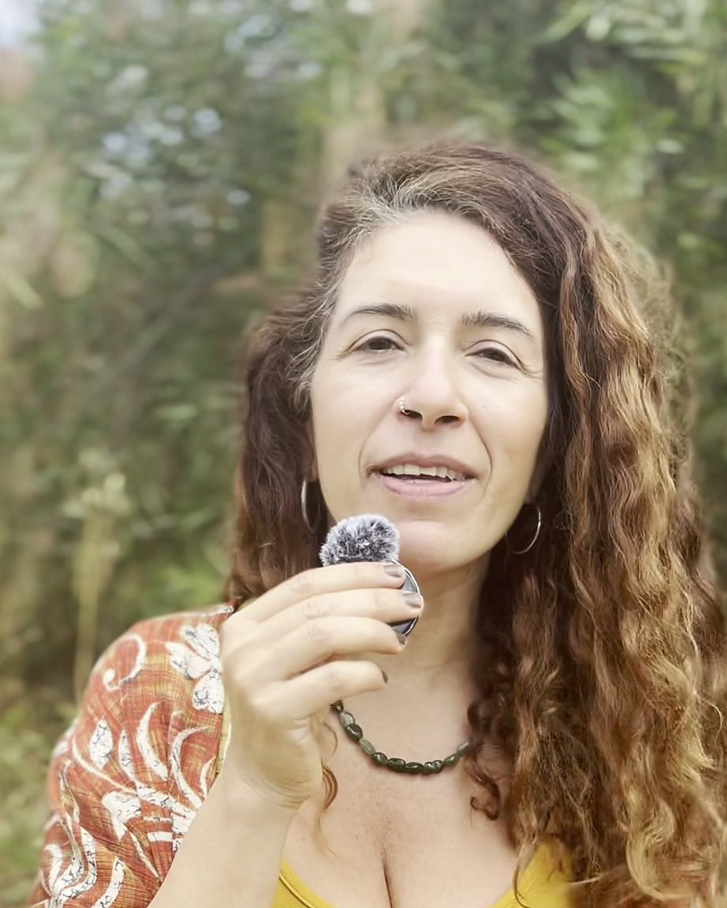
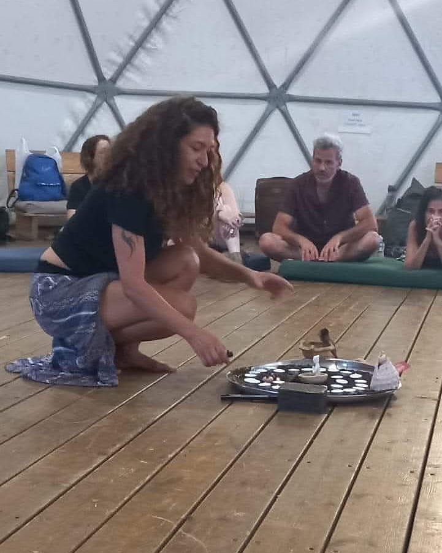
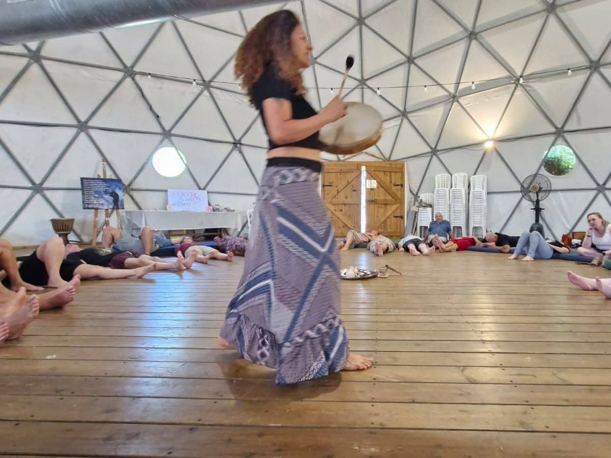
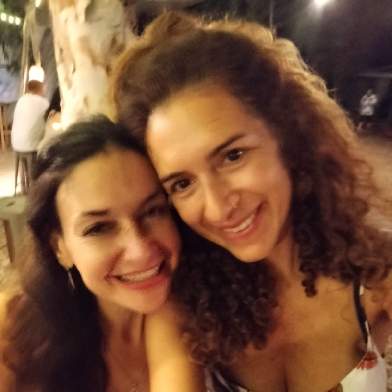
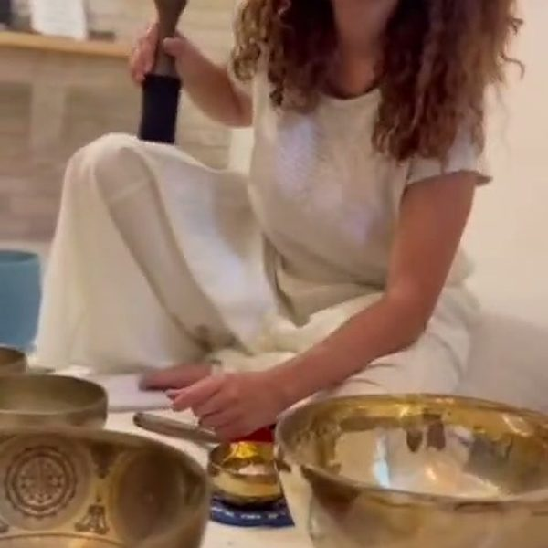
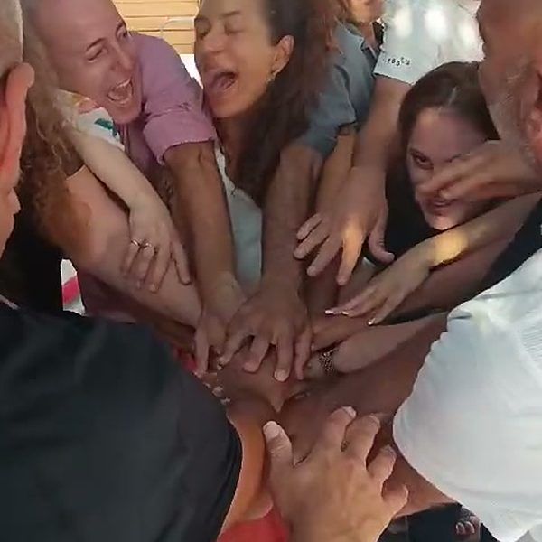

הכירו אותי
הסיפור שלי
אני מאמינה שאהבה היא לא רק דבר שאנחנו מחפשים. היא גם הדרך שבה אנחנו פוגשים את עצמנו, את האחר ואת החיים.
▢פורטרט טבעי של מירבimages/story-hero.jpg

מגשרת בין עולמות
הדרך שלי עוברת בין הגוף לרוח, בין המילים לשתיקה, בין הצליל לריפוי ובין האדם לעצמו ולאחר. אני מורת דרך רוחנית, אשת רפואה שמאנית ומאמנת זוגית.
[כאן יבוא הנוסח הסופי של הסיפור האישי, בגוף ראשון, בקול אישי, כן ונוגע.]
על מה אספר
- הדרך האישית וההתפתחותית
- החיבור בין רוח, גוף, נפש, קול ואהבה
- היותי מורת דרך רוחנית ואשת רפואה שמאנית
- העבודה עם קול, שירה, תנועה וצלילים מרפאים
- הליווי האישי והזוגי
- ליווי מעברי חיים ויצירת טקסים משמעותיים, לרבות טקסי לידה
- החזון ליצור מרחבי ריפוי, חיבור והיזכרות
▢תמונה מהדרךimages/story-1.jpg

▢תמונה עם כלי נגינהimages/story-2.jpg

רגעים מהדרך
▢תמונהimages/story-3.jpg

▢תמונהimages/story-4.jpg

▢תמונהimages/story-5.jpg
